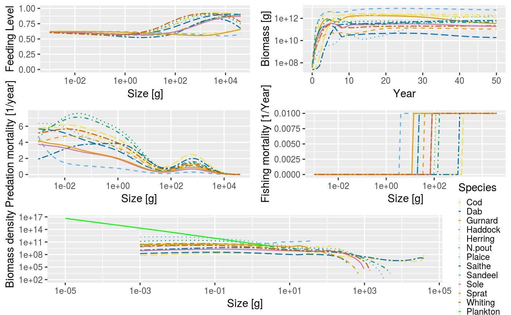

The mizer package implements multi-species size-spectrum models in R. It has been designed for modelling marine ecosystems. The general model is described in the section [Size spectrum models].
Using mizer is relatively simple. There are four main stages, each described in more detail in sections below.
There is a series of YouTube videos explaining how to use and install mizer.
If you already have R installed on your computer, then installation of the mizer package is very simple (assuming you have an active internet connection). Just start an R session and then type:
After installing mizer, to actually use it, you need to load the package using the library() function. Note that whilst you only need to install the package once, it will need to be loaded every time you start a new R session.
If you still need to install R as well, or if you are interested in installing a development version of mizer, see the Installing mizer vignette for further details
With mizer it is possible to implement many different types of size-spectrum models using the same basic tools and methods.
Setting the model parameters is done by creating an object of class ? MizerParams. This includes model parameters such as the life history parameters of each species, and the fishing gears. It is possible to create a MizerParams object directly using the class constructor, but most likely you will want to use one of the convenient wrapper functions provided in the package. These make reasonable default choices for many of the model parameters that you do not want to specify explicitly. For example to set up a simple model (described more in the Community Model vignette) you can even let mizer choose all the parameters for you.
For a more complicated multi-species model you need to provide a data frame with some species parameters. An example of a North Sea model is provided with the package
## Note: No sel_func column in species data frame. Setting selectivity to be 'knife_edge' for all species.## Note: No knife_edge_size column in species data frame. Setting knife edge selectivity equal to w_mat.## Note: No h provided for some species, so using f0 and k_vb to calculate it.## Note: No gamma provided for some species, so using f0, h, beta, sigma, lambda and kappa to calculate it.## Note: Using z0 = z0pre * w_inf ^ z0exp for missing z0 values.## Note: No ks column in species data frame so using ks = h * 0.2.The notes printed out by the function show us that mizer calculated default values for parameters that were not provided.
This is done by calling the project() method on the model parameters.
This produces an object of MizerSim} which contains the results of the simulation. In this example we chose to set some parameters of the project() function to specify that we want to project 10 years into the future, under the assumption of zero fishing effort. You can see the help page for project() for more details and it is described fully in the section on running a simulation.
After a simulation has been run, the results can be examined using a range of plotting_functions and summary functions. The plot() function combines several of these plots into one:
 We might be interested in how the proportion of large fish varies over time. For example we can get the proportion of Herrings in terms of biomass that have a weight above 50g in each of the 50 years:
## 0 1 2 3 4 5
## 0.82418075 0.04388892 0.29419134 0.51446384 0.73563622 0.88702688
## 6 7 8 9 10
## 0.90102213 0.73335861 0.18177264 0.08275899 0.15035014We can then use the full power of R to work with these results.
The functionality provided by mizer to explore the simulation results is more fully described in the section on exploring the simulation results.
Size spectrum models have emerged as a conceptually simple way to model a large community of individuals which grow and change trophic level during life. There is now a growing literature describing different types of size spectrum models (e.g. Benoît and Rochet 2004; Andersen and Beyer 2006; Andersen et al. 2008; Law et al. 2009; Hartvig 2011; Hartvig, Andersen, and Beyer 2011). The models can be used to understand how marine communities are organised (Andersen and Beyer 2006; Andersen, Beyer, and Lundberg 2009; Blanchard et al. 2009) and how they respond to fishing (K. H. Andersen and Rice 2010; K. H. Andersen and Pedersen 2010). This section introduces the central assumptions, concepts, processes, equations and parameters of size spectrum models.
Roughly speaking there are three versions of the size spectrum modelling framework of increasing complexity: The community model (Benoît and Rochet 2004; Maury et al. 2007; Blanchard et al. 2009; Law et al. 2009), the trait-based model (Andersen and Beyer 2006; K. H. Andersen and Pedersen 2010), and the multispecies model (Hartvig, Andersen, and Beyer 2011). The community and trait-based models can be considered as simplifications of the multispecies model. This section focuses on the multispecies model but is also applicable to the community and trait-based models. Mizer is able to implement all three types of model using similar commands.
Size spectrum models are a subset of physiologically structured models (Metz and Diekmann 1986; De Roos and Persson 2001) as growth (and thus maturation) is food dependent, and processes are formulated in terms of individual level processes. All parameters in the size spectrum models are related to individual weight which makes it possible to formulate the model with a small set of general parameters, which has prompted the label ``charmingly simple’’ to the model framework [Pope et al. (2006)}.
The model framework builds on two central assumption and a number of lesser standard assumption.
The first central assumption is that an individual can be characterized by its weight \(w\) and its species number \(i\) only. The aim of the model is to calculate the size- and trait-spectrum \({\cal N}_i(w)\) which is the density of individuals such that \({\cal N}_i(w)dw\) is the number of individuals in the interval \([w:w+dw]\). Scaling from individual-level processes of growth and mortality to the size spectrum of each trait group is achieved by means of the McKendrik-von Foerster equation, which is simply a continuity equation that describes the flow of biomass up the size spectrum, \[\begin{equation} \frac{\partial N_i(w)}{\partial t} + \frac{\partial g_i(w) N_i(w)}{\partial w} = -\mu_i(w) N_i(w) \end{equation}\] where individual growth \(g_i(w)\) and mortality \(\mu_i(w)\) are coupled, because growth of one individual is due to predation on another, who consequenty dies.
The continuity equation is supplemented by a boundary condition at the egg weight \(w_0\) where the flux of individuals (numbers per time) \(g_i(w_0) N_i(w_0)\) is determined by the reproduction of offspring by mature individuals in the population \(R_i\): \[\begin{equation} g_i(w_0)N_i(w_0) = R_i. \end{equation}\]
The second central assumption is that the rate at which a predator feeds on a prey is determined by the sizes and abundances
The rest of the formulation of the model rests on a number of ``standard’’ assumptions from ecology and fisheries science about how encounters between predators and prey leads to growth \(g_i(w)\) and recruitment \(R_i\) of the predators, and mortality of the prey \(\mu_i(w)\).
It is easiest to learn the basics of mizer through examples. We do this by looking at three set-ups of the framework, of increasing complexity. For each one there is a vignette that describes how to set up the model, run it in different scenarios, and explore the results. We recommend that you explore these in the following order:
In the community model, individuals are only characterized by their size and are represented by a single group representing an across species average. Community size spectrum models have been used to investigate how abundance size spectra emerge solely from the individual-level process of size-based predation and how fishing impacts metrics of community-level size spectra. Since few parameters are required it has been used for investigating large-scale community-level questions where detailed trait- and species-level parameterisations are not tractable.
The trait-based model resolves a continuum of species with varying asymptotic sizes. The asymptotic size is considered to be the most important trait that characterizes the species life history. The continuum is represented by a discrete number of species spread evenly over the range of asymptotic sizes. The number of species is not important and does not affect the general dynamics of the model. Many of the parameters, such as the preferred predator-prey mass ratio are the same for all species. Other model parameters are determined by the asymptotic size. For example, the weight at maturation of each species is a set fraction of the asymptotic size. In the trait-based model species-level complexity is captured through different life histories, and both intra- and inter-specific size spectra emerge. This approach is powerful for examining the generic population and whole community level responses to both size and species selective fishing without the requirement for detailed species-specific parameters.
In the multispecies model individual species are resolved in detail and each has distinct life history, feeding and reproduction parameters. More detailed information is required to parameterise the multispecies model but the approach can be used to address management strategies for a realistic community in a specific region or subset of interacting species.
All three models predict abundance, biomass and yield as well as predation and mortality rates at size. They are useful for establishing baselines of abundance of unexploited communities, for understanding how fishing impacts aquatic communities and for testing indicators that are being developed to support an ecosystem approach to fisheries management.
Which model to use in a specific case depends on needs and on the amount of information available to calibrate the model. The multi-species model could be set up for most systems where calibration parameters can be estimated. This requires a lot of insight and data. If the parameters are just guesstimates the results of the multi-species model will be no more accurate than the results from the trait-based model. In such situations we therefore recommend the use of the trait-based model, even though it only provides general information about the asymptotic size distribution and not about specific species.
The community model is useful for large-scale community-level questions where only the average spectrum is needed. Care should be taken when the community model is used to infer the dynamical properties of marine ecosystems, since it is prone to unrealistically strong oscillations due to the lack of dampening effects provided by the life-history diversity in the trait-based and multi-species models.
Perhaps the easiest way for newcomers to get into using mizer is via online apps. We are in the process to develop a variety of apps for setting up and exploring models. Here is an example of an online app to explore the effect of increased gear selectivity.
Andersen, K. H., and J. E. Beyer. 2006. “Asymptotic Size Determines Species Abundance in the Marine Size Spectrum.” The American Naturalist 168 (1): 54–61. https://doi.org/10.1086/504849.
Andersen, K. H., J. E. Beyer, and P. Lundberg. 2009. “Trophic and Individual Efficiencies of Size-Structured Communities.” Proceedings of the Royal Society B: Biological Sciences 276 (1654): 109–14. https://doi.org/10.1098/rspb.2008.0951.
Andersen, K.H., J.E. Beyer, M. Pedersen, N.G. Andersen, and H. Gislason. 2008. “Life-History Constraints on the Success of the Many Small Eggs Reproductive Strategy.” Theoretical Population Biology 73 (4): 490–97. https://doi.org/10.1016/j.tpb.2008.02.001.
Andersen, K. H., and M. Pedersen. 2010. “Damped Trophic Cascades Driven by Fishing in Model Marine Ecosystems.” Proceedings of the Royal Society B-Biological Sciences 277 (1682): 795–802. https://doi.org/10.1098/rspb.2009.1512.
Andersen, K. H., and Jake C. Rice. 2010. “Direct and Indirect Community Effects of Rebuilding Plans.” ICES Journal of Marine Science: Journal Du Conseil 67 (9): 1980–8. https://doi.org/10.1093/icesjms/fsq035.
Benoît, Eric, and Marie-Joëlle Rochet. 2004. “A Continuous Model of Biomass Size Spectra Governed by Predation and the Effects of Fishing on Them.” Journal of Theoretical Biology 226 (1): 9–21. https://doi.org/10.1016/S0022-5193(03)00290-X.
Blanchard, Julia L., Simon Jennings, Richard Law, Matthew D. Castle, Paul McCloghrie, Marie-Joëlle Rochet, and Eric Benoît. 2009. “How Does Abundance Scale with Body Size in Coupled Size-Structured Food Webs?” Journal of Animal Ecology 78 (1): 270–80. https://doi.org/10.1111/j.1365-2656.2008.01466.x.
De Roos, André M., and Lennart Persson. 2001. “Physiologically Structured Models – from Versatile Technique to Ecological Theory.” Oikos 94 (1): 51–71. https://doi.org/10.1034/j.1600-0706.2001.11313.x.
Hartvig, Martin. 2011. “Food Web Ecology.” Ph.D., Lund University.
Hartvig, Martin, K. H. Andersen, and Jan E. Beyer. 2011. “Food Web Framework for Size-Structured Populations RID c-4303-2011.” Journal of Theoretical Biology 272 (1): 113–22. https://doi.org/10.1016/j.jtbi.2010.12.006.
Law, Richard, Michael J. Plank, Alex James, and Julia L. Blanchard. 2009. “Size-Spectra Dynamics from Stochastic Predation and Growth of Individuals.” Ecology 90 (3): 802–11. https://doi.org/10.1890/07-1900.1.
Maury, Olivier, Blaise Faugeras, Yunne-Jai Shin, Jean-Christophe Poggiale, Tamara Ben Ari, and Francis Marsac. 2007. “Modeling Environmental Effects on the Size-Structured Energy Flow Through Marine Ecosystems. Part 1: The Model.” Progress in Oceanography 74 (4): 479–99. https://doi.org/10.1016/j.pocean.2007.05.002.
Metz, Johan A. J., and O. Diekmann. 1986. The Dynamics of Physiologically Structured Populations. Springer-Verlag.
Pope, John G., Jake C. Rice, Niels Daan, Simon Jennings, and Henrik Gislason. 2006. “Modelling an Exploited Marine Fish Community with 15 Parameters - Results from a Simple Size-Based Model.” Ices Journal of Marine Science 63 (6): 1029–44. https://doi.org/10.1016/j.icesjms.2006.04.015.